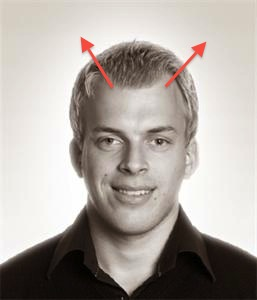

TD;LR
- JavaScript, bare... without the cruft.
- Kompilerer ned til JavaScript
- Med en kompilator skrevet i CoffeeScript
- Er fullstendig jslint compliant
We want code!!

Signifikante innrykk
if got_more_beer()
drink_beer()
else
buy_beer()
IT-hipster funksjonssyntax
add_prices = (a, b) -> a + b
Fikser scoping
accidentally_global = 'woops, I leaked'
window.global = "eksplisitt leak!"
Frivillige paranteser på funksjonskall
beer =
type: 'heineken'
taste: 'abysmal'
drink beer
# Omgomgomg
myPee = pee
# Ahh...
myPee = pee()
Hyggelige kortformer
if moreBeer() then alert "hurra!" else alert "nei, faen..."
Kan løkke begge veier
while numberOfBeers > 0
numberOfBeers--
until numberOfBeers is 0
numberOfBeers--
Alt kan suffixes
drink_beer() if numberOfBeers > 0
Alt er uttrykk!
beer_history = until numberOfBeers is 0
numberOfBeers--
Alt er uttrykk!
beer_text = switch remainingBeers
when remainingBeers > 10 then "All is well!"
when remainingBeers > 5 then "Maybe someone should..."
when remainingBeers > 2 then "Not cool."
when remainingBeers > 0 then "PANIC"
Sammenlikning flere veier!
just_one_more() while 0.5 < alcoholLevel < 1
Bygging av strenger (interpolering)
age = 10
text = "I just had #{age} beers!"
text = "I just had #{person.getBeerCount()} beers!"
Bygging av svære strenger
beer_story = """
<ul class="favourites">
<li class="first">One beer</li>
<li>Two beers</li>
<li class="third">Three beers</li>
</ul>
"""
Objektorientering
class Shape
constructor: (@x, @y) ->
centre: -> [ @x, @y ]
area: -> 0
point = new Shape 13, 37
Pluss en masse, masse mer
- Splats
- Fat arrows (function binding)
- Default parameter values
- Comprehensions
- for own key (hasOwnProperty())
- Array slicing
- Operator aliases
- Existential operator
- Destructuring assignment
- Block regular expression
- ...

Fett eller svett (hot or not)?
- Fikser mye av det som er dritt med JavaScript!
-
Men...
- Ny ekstern avhengighet
- Nytt språk i porteføljen
- Ekstra (magisk) kompileringssteg
- Man må fortsatt forstå JavaScript!
- Men... det er gøy å skrive!